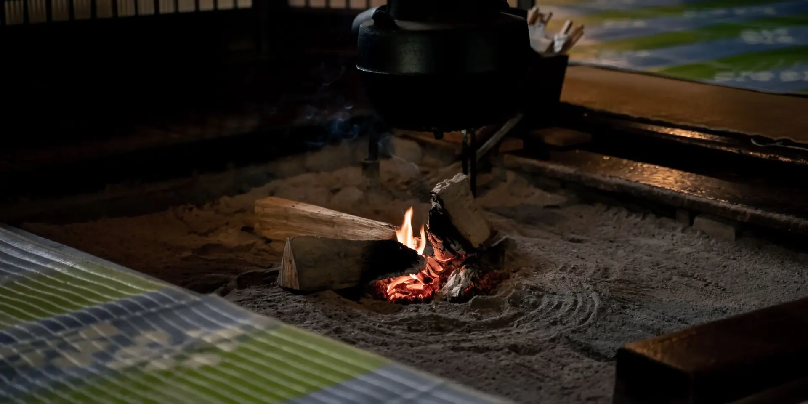

よくある質問FAQ
料理について
食事はどこでいただけますか？
ご夕食は囲炉裏のあるお食事処、ご朝食は渓谷を望む大広間でご用意します。
アレルギーには対応してもらえますか？
ご到着の7日前までにお知らせください。可能な範囲で代わりのお料理をご用意します。
子ども用の食事はありますか？
小学生以下のお子さま向けに、お子さま会席をご用意しています。
温泉について
館内のお風呂は天然温泉ですか？
はい。すべて敷地内の自家源泉を使った、かけ流しの天然温泉です（架空の設定です）。
お風呂を利用できる時間は？
チェックインから23時まで、翌朝は5時から9時30分までご利用いただけます。
大浴場から、そのまま露天風呂に出られますか？
いいえ。大浴場と露天風呂は別の場所にございますので、浴衣のままお移りください。
日帰り入浴はできますか？
はい。10時〜14時（最終受付13時30分）にご利用いただけます。詳しくはご予約についてをご覧ください。
お部屋について
露天風呂付きの客室はありますか？
囲炉裏付き離れに、専用の露天風呂がございます。1棟のみのため、お早めにご予約ください。
Wi-Fiは使えますか？
はい。全館で無料Wi-Fiをご利用いただけます。山あいのため、つながりにくい場所もございます。
ペットと一緒に泊まれますか？
申し訳ございませんが、ペットを連れてのご宿泊はお受けしておりません。